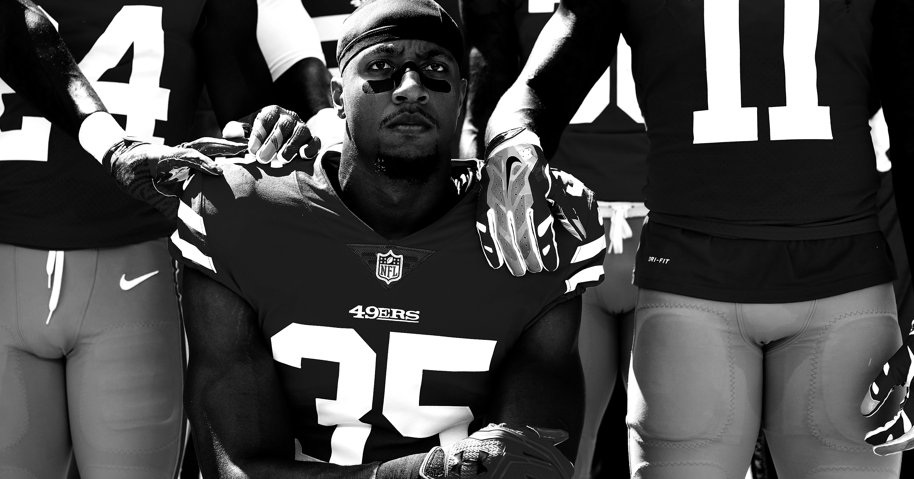

#not
the#
flag
take a knee
#TakeAKnee refers to a hashtag used regarding United States President Donald Trump’s comments about controversial San Fransisco 49ers quarterback Colin Kaepernick, who infamously does not stand for the American National Anthem as a means of protest against racial inequality and police brutality across America.
During a speech made in Alabama, Trump called Kaepernick a “son of a bitch” who should be “fired.” Many NFL officials, players and fans rallied around Kaepernick by issuing statements about the President’s comments and engaging in protest during games by taking a knee and/or locking arms during the national anthem, while others refused to leave the locker room during the song.
do your part

We chose to kneel because it's a respectful gesture. I remember thinking our posture was like a flag flown at half-mast to mark a tragedy.-Eric Reid
It is our duty to let people know the true purpose of why the Take a Knee foundation was started: To protest against the racial discrimation and systematic injustice brought to us by the country that we love. In order to help us achieve our goal, we need your help. Tweet with the hashtag #TakeaKnee. Donate to our cause so that we can spread the word.
MOST IMPORTANTLY, educate yourself so that when your run into people that think badly of the cause, you are able to justify the cause articulately and efficiently. Subscribe to our email to receive weekly updates on how you can educate yourself.